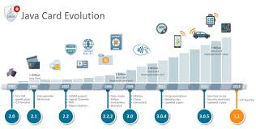

Java
Java (software platform)
Wikipedia, the free encyclopedia
This article is about a software platform. For the programming language, see Java (programming language). For the software package downloaded from java.com, see Java SE.
Not to be confused with JavaScript.
Java (software platform)
Original author(s) James Gosling, Sun Microsystems
Developer(s) Oracle Corporation
Initial release 14 April 1998; 22 years ago[1][2]
Stable release 14.0.1 (April 14, 2020; 57 days ago[3])
11.0.7 (January 14, 2020; 4 months ago[4])
8u252 (January 14, 2020; 4 months ago[5])
Preview release 15+20 (April 22, 2020; 49 days ago[6])
Written in Java, C++, C,Assembly Language[7]
Operating system Microsoft Windows, Solaris, Linux, macOS[8]
Platform IA-32, x64, ARMv7, ARMv8, SPARC (Java 8 includes 32-bit support – while no longer supported freely by Oracle for commercial use – 32-bit platforms are not supported in other versions, since dropped officially in Java 10.)[8]
Available in English, Chinese, French, German, Italian, Japanese, Korean, Portuguese, Spanish, Swedish[9]
Type Software platform
License Dual-license: GNU General Public License version 2 with classpath exception,[10] and a proprietary license.[11]
Website java.com
A Java-powered program
Java is a set of computer software and specifications developed by James Gosling at Sun Microsystems, which was later acquired by the Oracle Corporation, that provides a system for developing application software and deploying it in a cross-platform computing environment. Java is used in a wide variety of computing platforms from embedded devices and mobile phones to enterprise servers and supercomputers. Java applets, which are less common than standalone Java applications, were commonly run in secure, sandboxed environments to provide many features of native applications through being embedded in HTML pages.

Writing in the Java programming language is the primary way to produce code that will be deployed as byte code in a Java virtual machine (JVM); byte code compilers are also available for other languages, including Ada, JavaScript, Python, and Ruby. In addition, several languages have been designed to run natively on the JVM, including Clojure, Groovy, and Scala. Java syntax borrows heavily from C and C++, but object-oriented features are modeled after Smalltalk and Objective-C.[12]
Java eschews certain low-level constructs such as pointers and has a very simple memory model where objects are allocated on the heap (while some implementations e.g. all currently supported by Oracle, may use escape analysis optimization to allocate on the stack instead) and all variables of object types are references. Memory management is handled through integrated automatic garbage collection performed by the JVM.
On November 13, 2006, Sun Microsystems made the bulk of its implementation of Java available under the GNU General Public License (GPL).[13][14]
The latest version is Java 14, released in March 2020. Java, being a Open Source platform has many distributors, like Amazon, IBM, Azul Systems, AdoptOpenJDK, and many others with free and commercial support distributions (Amazon Correto, Zulu, AdoptOpenJDK, Liberica, etc), but regarding to the Oracle distribution, Java 11, is the currently supported long-term support (LTS) version ("Oracle Customers will receive Oracle Premier Support"), released on September 25, 2018. Oracle (and others) "highly recommend that you uninstall older versions of Java",[15] because of serious risks due to unresolved security issues.[16][17][18]
Since Java 9 (and 10) is no longer supported, Oracle advises its users to "immediately transition" to Java 11 (Java 12 is also an non-LTS option). Oracle released the last free-for-commercial-use public update for the legacy Java 8 LTS in January 2019, and will continue to support Java 8 with public updates for personal use until at least December 2020. Oracle extended support for Java 6 ended in December 2018.[19]
Copyright© 2020